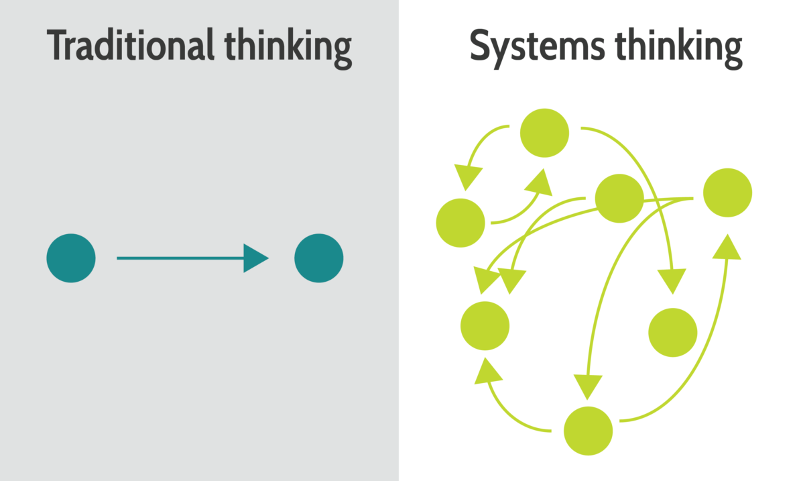
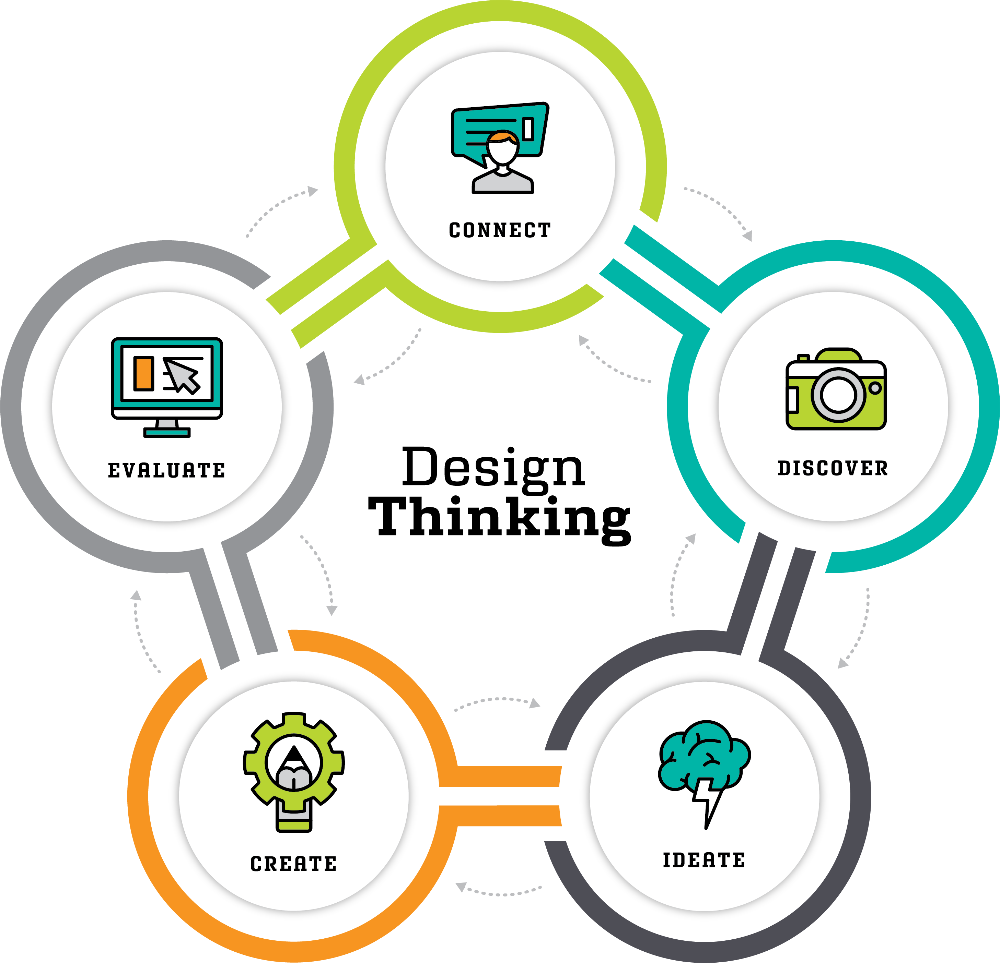

Human-Centered Systems Thinking
Systems Thinking is a way to gain a deeper understanding of the world around us. Like Human-Centered Design, it attempts to see past the surface-level, event-based, explanations of behavior to contruct mental models of behavior.
We and everyone we'll design for live within complex social, cultural, and institutional systems. Those around is influence what we say, do, see, and believe.
While the language might sound technical, the theories are inherently human-centered. It focuses on how relationships between and amongst people, behaviors, and environments lead to certian outcomes. In this article, I'll use personal health as an example.
While systems thinking help us understand behavior better, only by combining it with the iterative approaches of design thinking, can we devise better solutions to systemic problems.

Family
The systems we care about aren't technical ones, but human ones. The best example of a simple system is a family. It has multiple parts, relationships between them, and consistent roles and behaviors.
Relation to Design Thinking
Embracing complexity and nuance is also an important part of both design thinking and systems thinking. These two approaches to problem solving are extremely compatible with each other. Design Thinking excels at helping us discover and address user painpoints. And systems thinking gives us a framework to understand how a user’s behavior is influenced by their history, environment, and current context.
Both use models to help us make sense of the complexity and give us a glimpse into the user experience that can lead to valuable insights and innovative ideas.
Many of these ideas around systems thinking are already common in Design Thinking. But by incorporating the language and tools into our work, we can better understand the critical role that feedback and systems play in influence user behavior and experience.

Systems Thinking
Interconnectedness, emergence, feedback, causal loops
Systems Thinking
"Systems thinking is an approach to integration that is based on the belief that the component parts of a system will act differently when isolated from the system’s environment or other parts of the system"

Design Thinking
Empathize, Define, Ideate, Prototype, Test, Iterate
Design Thinking
"Design Thinking is an iterative process in which we seek to understand the user, challenge assumptions, and redefine problems in an attempt to identify alternative strategies and solutions that might not be instantly apparent with our initial level of understanding"
Example: Health
To give you a better understanding of the necessary parts of a system, I'll use the example of health. Human bodies are extremely complex systems that are adaptable to changes and are greatly influenced by our behavior and environment.
If we want to be healthier, we can change our diet, exercise, sleep. stress levels, relationships, and so on since they all influence our overall health. To add to the complexity, these behaviors are often connected to each other, so for example getting less sleep may increase stress.
These interconnections are what make solving systemic problems hard. We often need a holistic approach that inflences all these part, rather than pinpointing a single area to focus on.
The following modules will give you the tools to see the systems around you and know when it's necessary to "zoom out" and look at the broader context of the problem.
Modules
Connections
Before building up a system, you have to identify all of the important parts and understand how they connect to each other. Does the amount you sleep influence your stress level? Is your current diet negatively affecting your health?
Delays
It often takes time for changes in one behavior to lead to changes in another. If you change your diet today, it may take a week or two to notice changes in your overall health.
Feedback
Feedback is when changes in one behavior eventually leads to that behavior changing more. So if you start exercising and it has a positive effect on your health, you are more likely to keep exercising.
Emergence
Emergence is when the these feedback loops lead to new forms of behavior. If you continue to exercise, you may join a community of runners and see running as part of your identity. Your new "healthy-identity" is an emergent property of the behavior change to start exercising more.
Examples
This holitic approach to problem solving is much messier than targetting a specific problem but for many chanllenges we face, it's the only way to get to a solution. Here are just a few additional examples to show what this 'systems-level' approach looks like in the real world.
Education


KIPP School
KIPP charter schools help children in communities with low income and low graduation rates get to college. They not only focus on the academic but also focus on the mindset, family life, and culture.

makoko floating school
Before the architect designed the school, he learned from people living their to better understand the role a school would play in the community.
Criminal Justice

Prisoner Entrepreneurship Program, A Documentary
Difficulty to find a job is a major contributor to the cycle of recidivism. By training motivated prisoners to create their own jobs, we can drastically reduce recidivism.

How Norway's Prisons Are Different From America's
Norway's Criminal Justice system has a differnt purpose than America's. The different roles the prison guards play is sign of how systemic change includes shifting individual behavior.

Red Hook Community Justice
Red hook community court is a holstic approach to criminal justice where everyone involved is invested in helping the defendent get their life together.